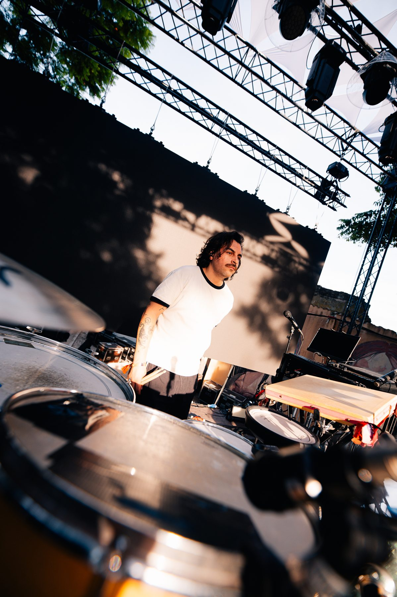
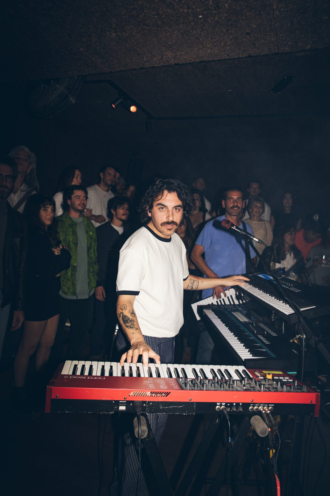
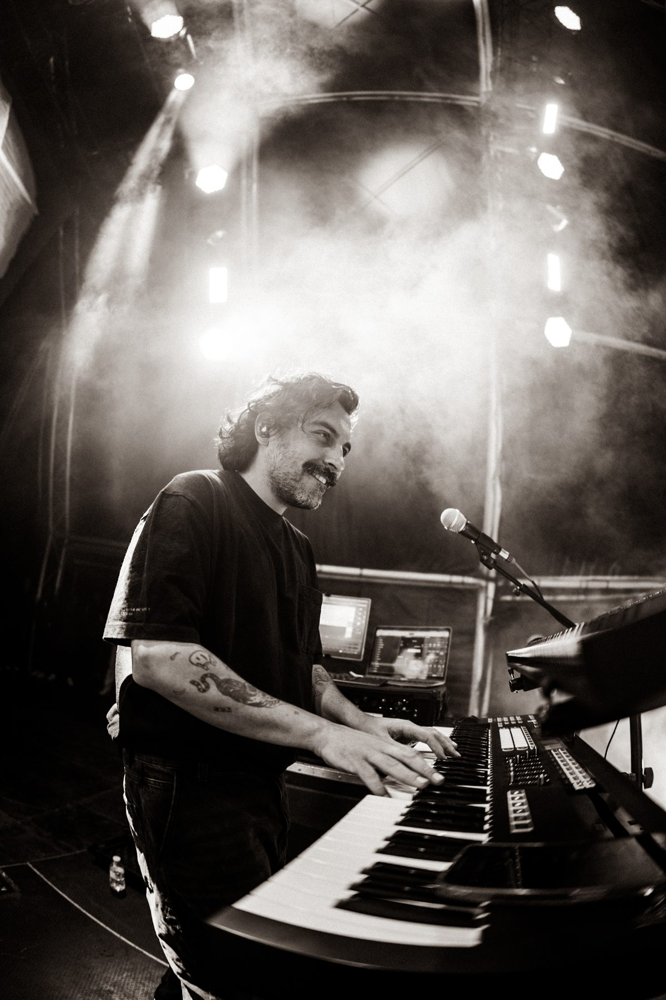

Bio

Guilherme Salgueiro was born in 1994 in Queluz, Portugal, into a family of musicians, and knew from an early age what his career would be.
At 10 he started forming garage bands across all kinds of styles, from hip-hop to Balkan music, moving between several instruments, above all percussion and drums.
In 2010 he joined the Metropolitana Professional Course in Classical Percussion, finishing in 2013, and went on to study one more year in the same class at the Lisbon Superior School of Music (ESML).

Never leaving his garage bands behind, in 2014 he started taking music more seriously, this time on keyboards, a natural step for someone coming from melodic percussion such as vibraphone and marimba.
He joined several hip-hop projects and spent many nights at Tokyo, in Lisbon's Cais do Sodré, playing with a range of cover bands.
From 2014 to 2015 he studied at the JB Jazz school, performing with the school combo at Festa do Jazz at Teatro São Luiz.

With the variety of projects he took part in over the years, he also began working as a musical director, both for the projects he plays in and for others.
Since 2017 he has been a member of The Black Mamba, with whom he won Festival da Canção and represented Portugal at Eurovision in 2021, received the PLAY Award for Best Band in 2022, and recorded a live album at Abbey Road.
Besides his work as a musician and musical director, he has produced for several artists, including Mind Mojo, Irma, Marisa Liz and Inês Apenas, among others.
Guilherme Salgueiro nasceu em 1994, em Queluz, numa família de músicos, e desde cedo soube qual seria o seu percurso profissional.
Aos 10 anos começa a formar bandas de garagem dos mais variados estilos, do hip-hop à música balcânica, passando por vários instrumentos, com destaque para a percussão e a bateria.
Em 2010 entra no Curso Profissional da Metropolitana, na classe de Percussão Clássica, que conclui em 2013. Continua mais um ano na mesma classe, na Escola Superior de Música de Lisboa.
Sem nunca deixar as bandas de garagem, em 2014 começa a levar a música mais a sério, desta vez nos teclados, um passo natural para quem vinha da percussão melódica, como o vibrafone e a marimba.
Integra vários projectos de hip-hop e passa muitas noites no Tokyo, no Cais do Sodré, a tocar com várias bandas de covers.
Entre 2014 e 2015 frequenta a escola JB Jazz e chega a tocar com o combo da escola na Festa do Jazz, no São Luiz.
Com a diversidade de projectos que vai integrando ao longo dos anos, começa também a assumir a direcção musical, tanto nos projectos onde toca como noutros.
Desde 2017 faz parte dos The Black Mamba, com quem venceu o Festival da Canção e representou Portugal na Eurovisão em 2021, recebeu o Prémio PLAY de Melhor Banda em 2022 e gravou um disco ao vivo em Abbey Road.
Para além de músico e director musical, tem trabalhado como produtor em vários projectos, como Mind Mojo, Irma, Marisa Liz e Inês Apenas, entre outros.